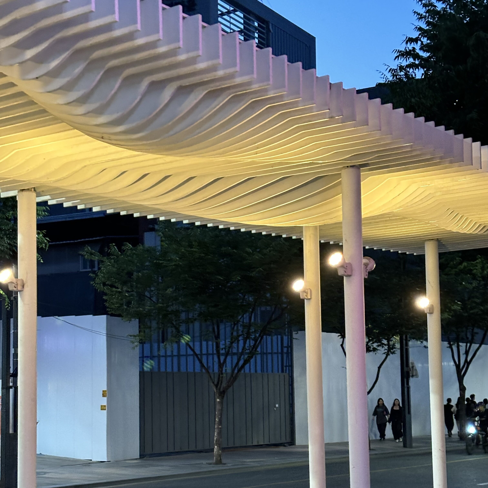
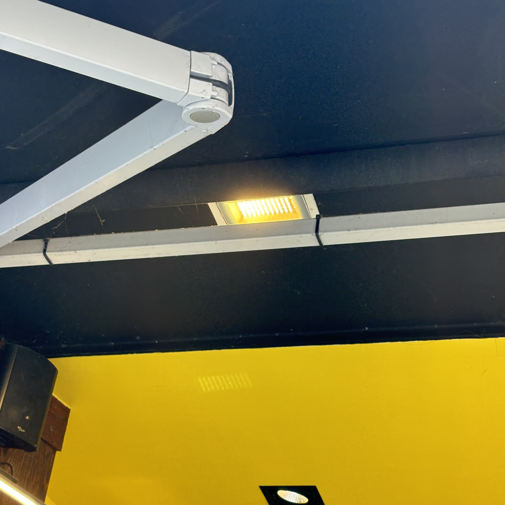
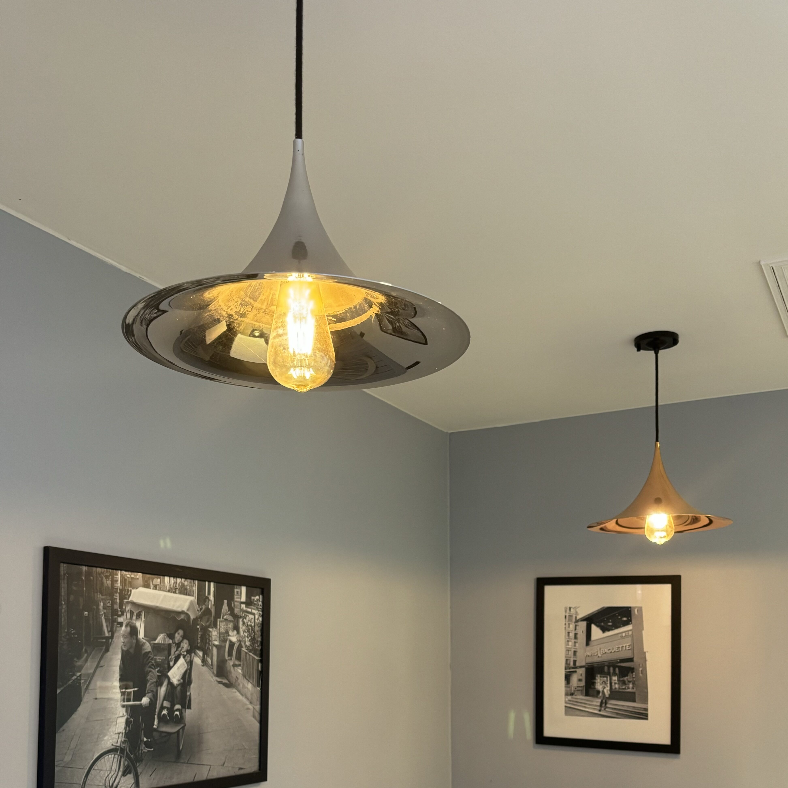
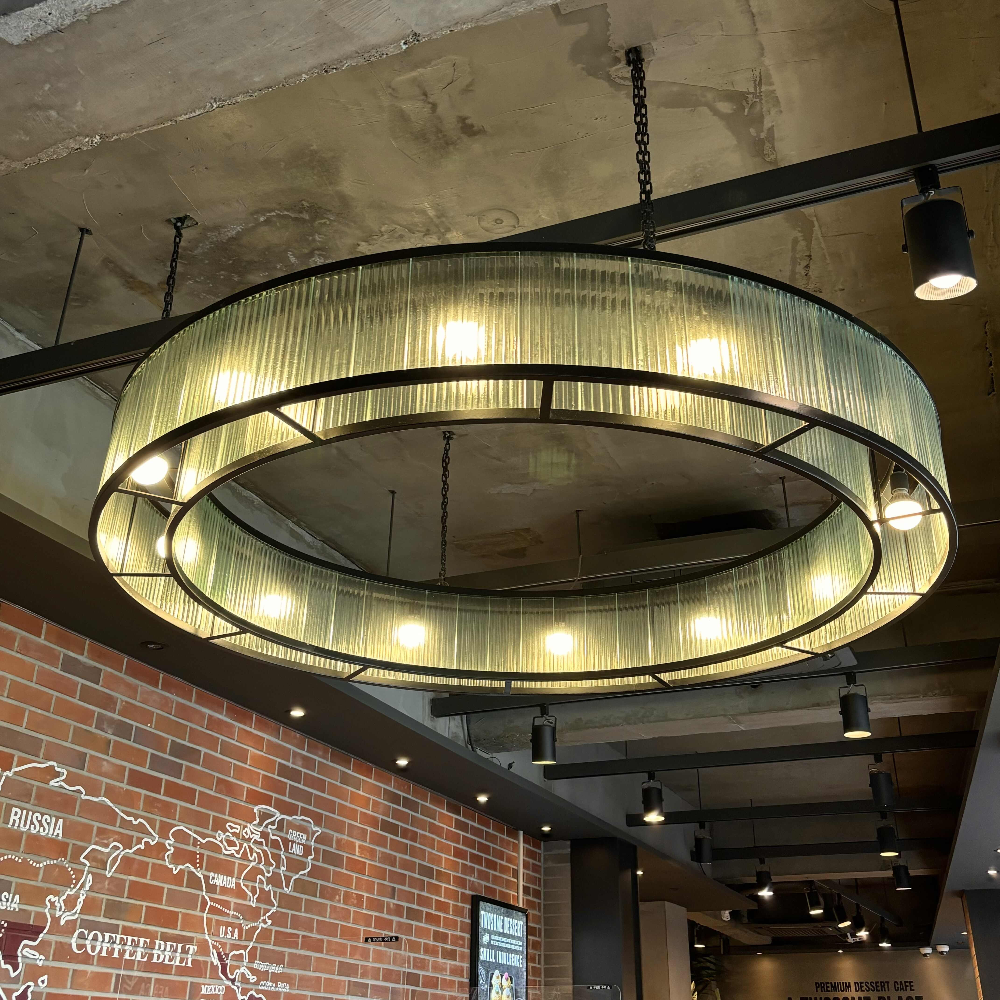
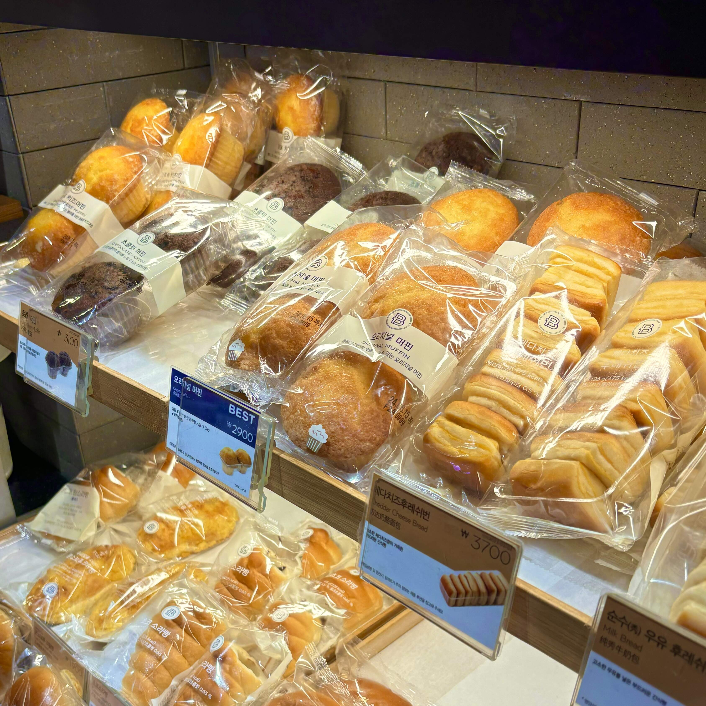
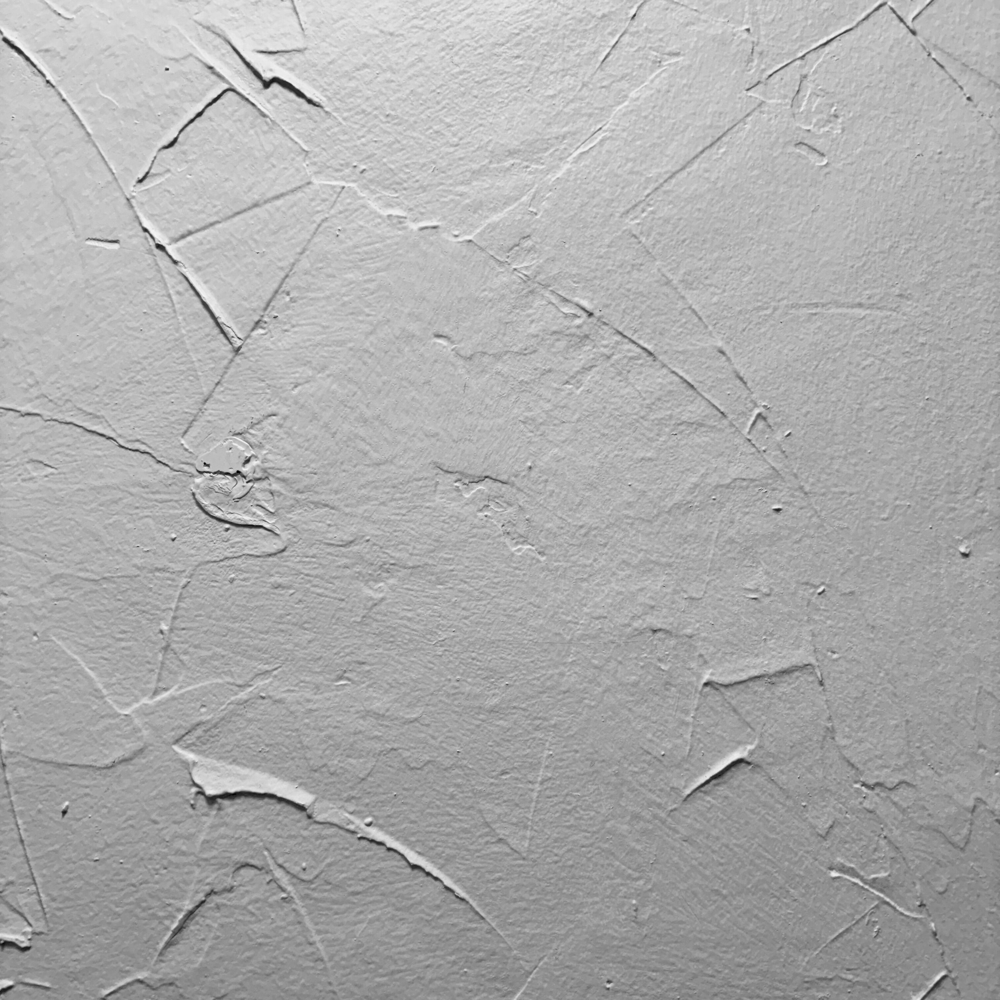
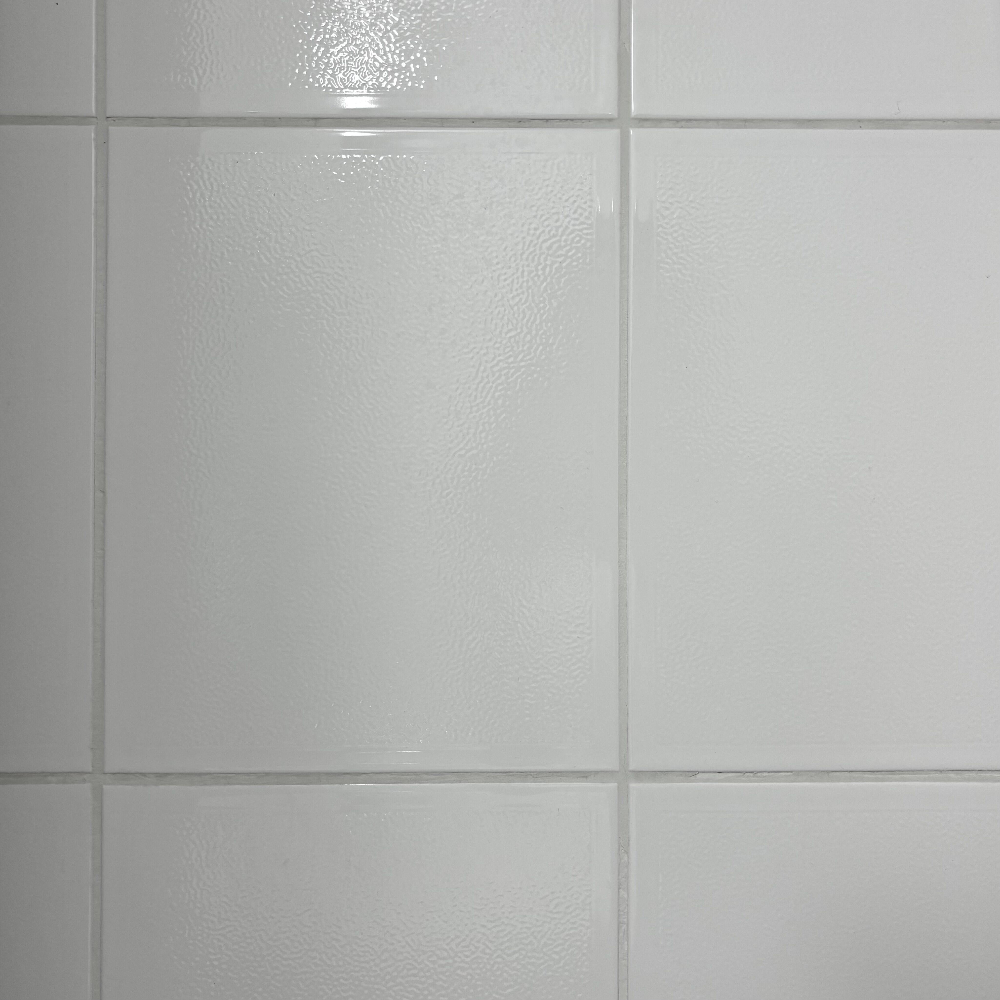
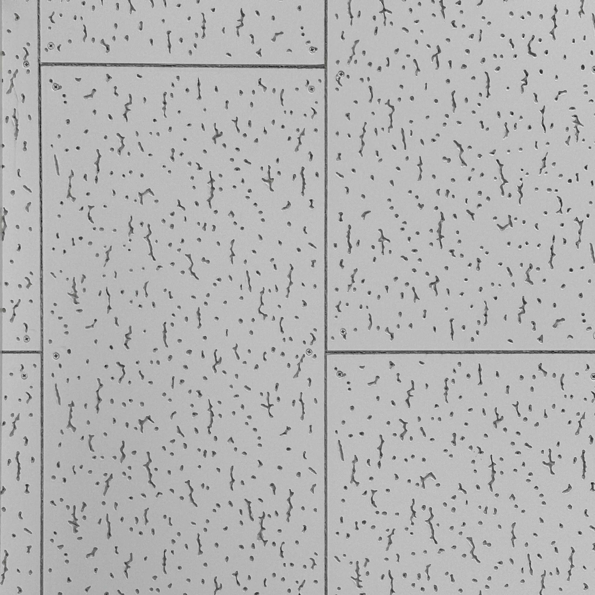
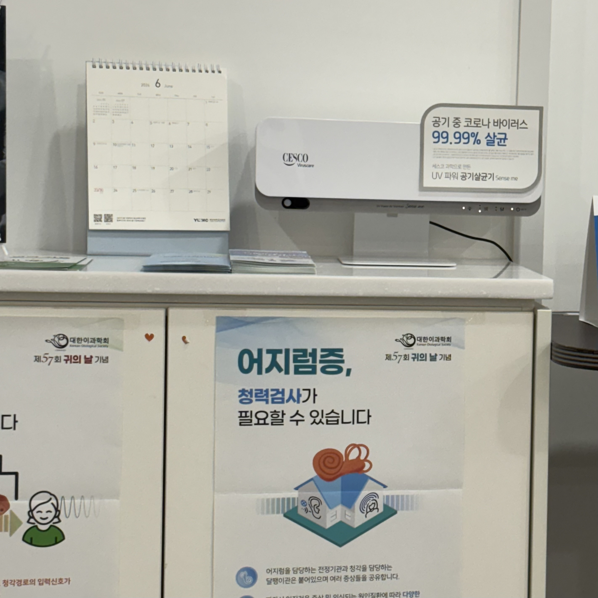

따뜻한 색감
카페나 음식점 등 조명의 색은 단순히 분위기 연출을 위한 역할을 할 뿐만 아니라 고객에게서 제공되는 방법이나 그에 대한 느낌에도 큰 영향을 끼친다고 한다. 그만큼 전체적인 연출에 중요한 역할을 하는 것이 조명이고, 세부적으로 들어가서는 조명의 색온도인 것 같다. 보통 내가 갔던 카페나 음식점에서는 안락하고 따뜻한 느낌의 조명을 사용했었다. 이유가 궁금해서 찾아보니 이러한 전구색이 주는 안락함은 전체적인 분위기를 따뜻하고 편하게 만들뿐더러 사람의 긴장을 풀어주어 몸을 더 편하게 해주는 역할을 한다고도 한다. 또 사회적 유대와 공동체 형성을 강화하는 역할을 한다고도 한다. 사람들이 음식점과 카페에 모여 대화를 나누고 관계를 형성하는 것은 매우 중요한 일 중 하나라고 생각한다.
    차가운 색감
이러한 색감들은 주로 병원에서 많이 보이는데, 이렇게 차가운, 또는 흰색을 사용하는 이유는 청결해야 하기 때문이라고 한다. 깨끗한 환경을 제공하는 것은 시민들의 건강과 복지를 보장하는 방법 중 하나이며, 복지와 신뢰를 강화하는 데 기여할 수 있다고 한다. 또 넓어 보이는 효과도 있기에 이러한 색상은 화장실에도 무난히 사용된다고 한다. 그 외의 이유에서 흰색은 특정 계층이나 집단을 구별하지 않는 중립적인 색상으로, 평등한 서비스를 제공한다는 메시지를 전달 할 수도 있다고 한다. 하지만 비판적으로 바라봤을 때 이것은 오랫동안 사회적 관습으로 우리의 무의식에 고정관념처럼 박혀있는 것이라는 생각이 들었다.
   